Previous sections described using the modified nodal analysis solving linear networks including controlled sources. It can also be used to solve networks with non-linear components like diodes and transistors. Most methods are based on iterative solutions of a linearised equation system. The best known is the so called Newton-Raphson method.
The Newton-Raphson method is going to be introduced using the example circuit shown in fig. 3.2 having a single unknown: the voltage at node 1.
The 1x1 MNA equation system to be solved can be written as
whereas the value for  is now going to be explained. The current
through a diode is simply determined by Schockley's approximation
is now going to be explained. The current
through a diode is simply determined by Schockley's approximation
| 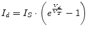 | (3.24) |
Thus Kirchhoff's current law at node 1 can be expressed as
| 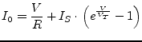 | (3.25) |
By establishing eq. (3.26) it is possible to trace the
problem back to finding the zero point of the function  .
.
Newton developed a method stating that the zero point of a functions
derivative (i.e. the tangent) at a given point is nearer to the zero
point of the function itself than the original point. In mathematical
terms this means to linearise the function  at a starting value
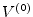.
at a starting value
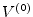.
Setting 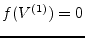 gives
| 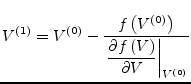 | (3.28) |
or in the general case with 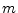 being the number of iteration
This must be computed until 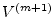 and 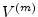 differ less than a certain barrier.
With very small
the iteration would break too
early and for little
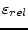 values the iteration aims to
a useless precision for large absolute values of  .
.
With this theoretical background it is now possible to step back to eq. (3.26) being the determining equation for the example circuit. With
| 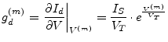 | (3.31) |
and
| 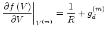 | (3.32) |
the eq. (3.29) can be written as
when the expression
| 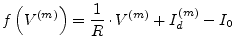 | (3.34) |
based upon eq. (3.26) is taken into account. Comparing the introductory MNA equation system in eq. (3.23) with eq. (3.33) proposes the following equivalent circuit for the diode model.
With
| 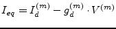 | (3.35) |
the MNA matrix entries can finally be written as
 |
(3.36) |
In analog ways all controlled current sources with non-linear
current-voltage dependency built into diodes and transistors can be
modeled. The left hand side of the MNA matrix (the A matrix) is
called Jacobian matrix which is going to be build in each iteration
step. For the solution vector  possibly containing currents as
well when voltage sources are in place a likely convergence criteria
as defined in eq. (3.30) must be defined for the
currents.
possibly containing currents as
well when voltage sources are in place a likely convergence criteria
as defined in eq. (3.30) must be defined for the
currents.
Having understood the one-dimensional example, it is now only a small step to the general multi-dimensional algorithm: The node voltage becomes a vector 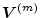, factors become the corresponding matrices and differentiations become Jacobian matrices.
The function whose zero must be found is the transformed MNA equation 3.23:
| 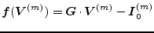 | (3.37) |
The only difference to the linear case is that the vector 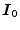 also contains the currents flowing out of the non-linear components. The iteration formula of the Newton-Raphson method writes:
Note that the Jacobian matrix is nothing else but the real part of the MNA matrix for the AC analysis:
where the index 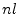 denotes only the non-linear terms. Putting equation 3.39 into equation 3.38 and multiplying it with the Jacobian matrix leads to
| 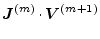 | 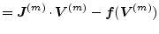 | (3.40) |
| 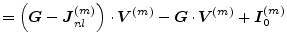 | (3.41) | |
| 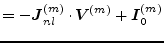 | (3.42) |
So, bringing the Jacobian back to the right side results in the new iteration formula:
| 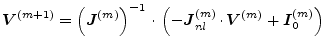 | (3.43) |
The negative sign in front of
 is due to the
definition of
flowing out of the component. Note
that
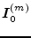 still contains contributions of linear
and non-linear current sources.
is due to the
definition of
flowing out of the component. Note
that
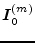 still contains contributions of linear
and non-linear current sources.
Numerical as well as convergence problems occur during the Newton-Raphson iterations when dealing with non-linear device curves as they are used to model the DC behaviour of diodes and transistors.
Linearising the exponential diode eq. (3.48) in the forward region a numerical overflow can occur. The diagram in fig. 3.5 visualises this situation. Starting with the next iteration value gets 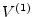 which results in an indefinite large diode current. It can be limited by iterating in current instead of voltage when the computed voltage exceeds a certain value.
How this works is going to be explained using the diode model shown in fig. 3.4. When iterating in voltage (as normally done) the new diode current is
| 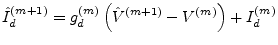 | (3.44) |
The computed value 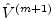 in iteration step 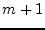 is not going to be used for the following step when exceeds the critical voltage 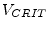 which gets explained in the below paragraphs. Instead, the value resulting from
| 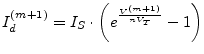 | (3.45) |
is used (i.e. iterating in current). With
| 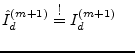 and 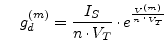 | (3.46) |
the new voltage can be written as
| 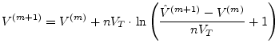 | (3.47) |
Proceeding from Shockley's simplified diode equation the critical voltage is going to be defined. The explained algorithm can be used for all exponential DC equations used in diodes and transistors.
The critical voltage is the voltage where the curve radius
of eq. (3.48) has its minimum with 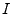 and  having
equally units. The curve radius
having
equally units. The curve radius  for the explicit definition in
eq. (3.49) can be written as
for the explicit definition in
eq. (3.49) can be written as
Finding this equations minimum requires the derivative.
The diagram in fig. 3.6 shows the graphs of
eq. (3.50) and eq. (3.51) with ,
and
 .
.
With the following higher derivatives of eq. (3.48)
 |
(3.52) | |
| (3.53) | ||
| (3.54) |
the critical voltage results in
| (3.55) |
In order to avoid numerical errors a minimum value of the pn-junction's derivative (i.e. the currents tangent in the operating point) is defined. On the one hand this avoids very large deviations of the appropriate voltage in the next iteration step in the backward region of the pn-junction and on the other hand it avoids indefinite large voltages if itself suffers from numerical errors and approaches zero.
The quadratic input I-V curve of field-effect transistors as well as the output characteristics of these devices can be handled in similar ways. The limiting (and thereby improving the convergence behaviour) algorithm must somehow ensure that the current and/or voltage deviation from one iteration step to the next step is not too a large value. Because of the wide range of existing variations how these curves are exactly modeled there is no standard strategy to achieve this. Anyway, the threshold voltage should play an important role as well as the direction which the current iteration step follows.
 Re
Re